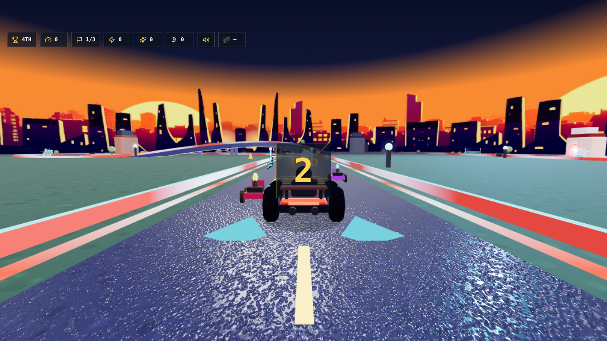
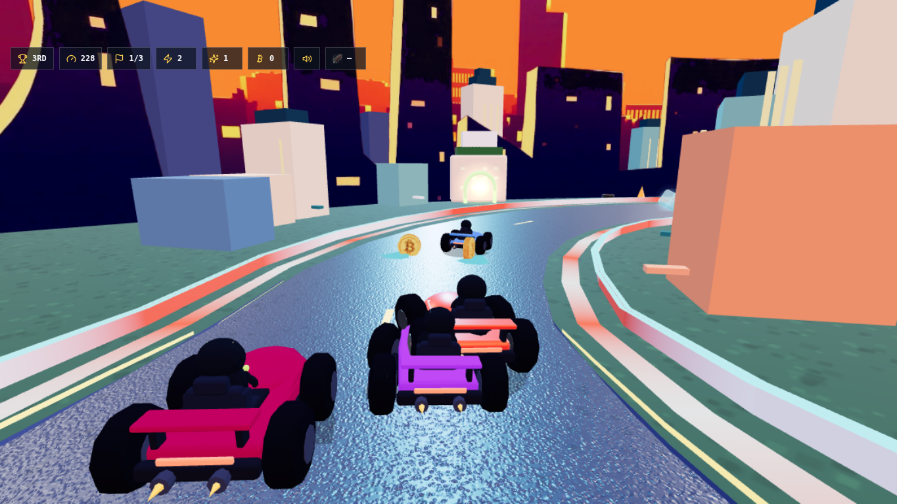
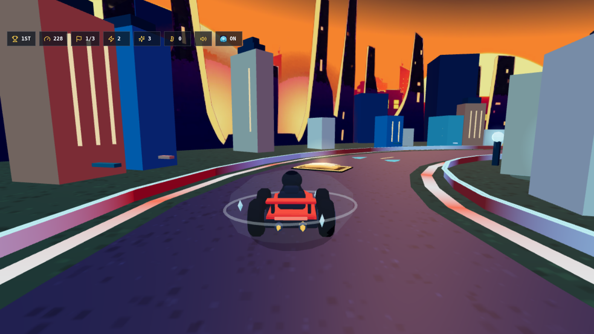
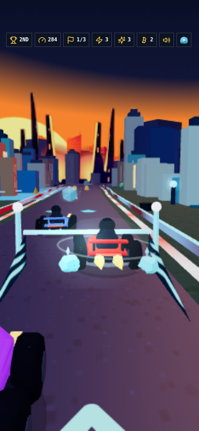
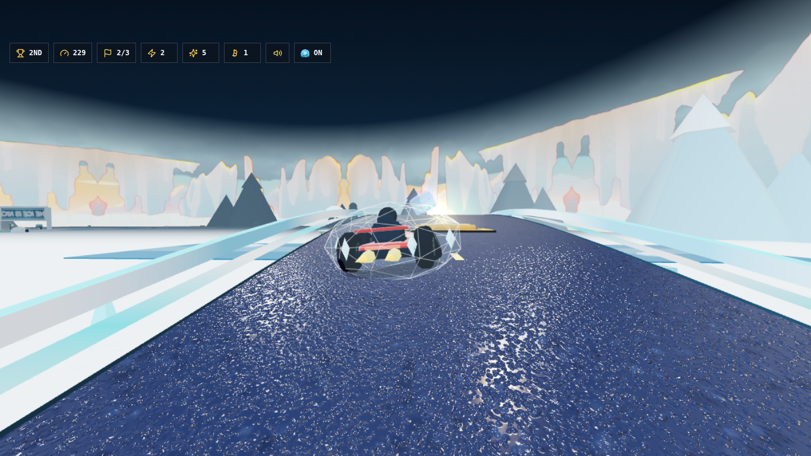
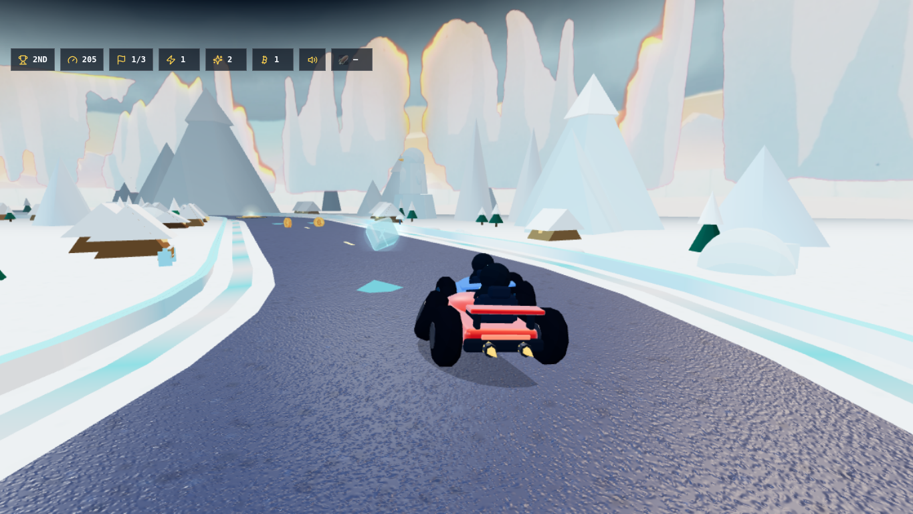
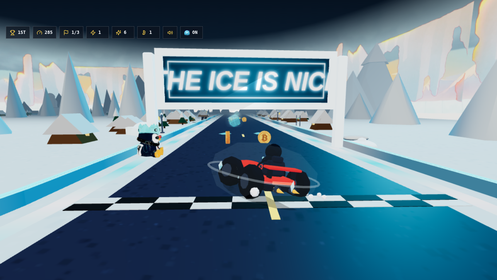
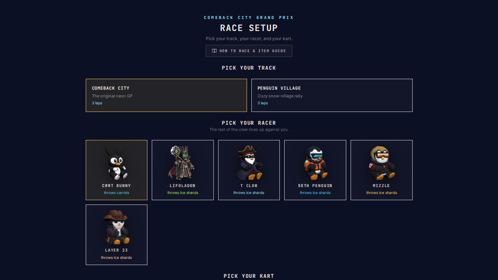

Comeback City Grand Prix — overnight major rebuild (branch overnight-major-rebuild-20260719)
Same chase-view family, before vs rebuild. Mechanics untouched: steering, items, AI, laps, collision, timing all gate-verified identical.
Comeback City — race view
BEFORE — flat skyline cards, empty plain, 70° jittery wide FOV, driver hidden
REBUILD — real city massing, unified kart+penguin roster, calm 60° elevated chase
Comeback City — effects-off proof frame (the "no effects hiding weak geometry" test)
REBUILD ?gfx=off — solid seated penguin, grounded 4-wheel kart, readable road/curbs
MOBILE ?gfx=off — same read at 390×844
Penguin Village — race view
BEFORE — white void, flat shelf cards, glitter road, crystal-cage shield
REBUILD — alpine village (A-frames, warm windows, pines, snowbanks, ice ridge)
Penguin Village — effects-off
REBUILD ?gfx=off — village reads without any atmosphere effects
ROSTER — all six Ordinal Penguins, distinct identities
Gameplay recordings
DESKTOP autoplay 10s
MOBILE autoplay 10s